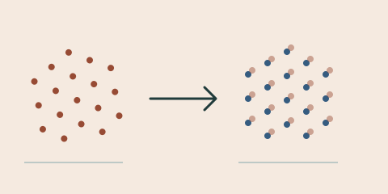
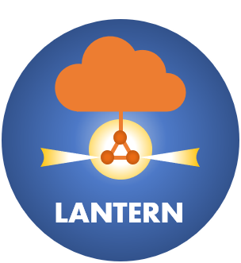
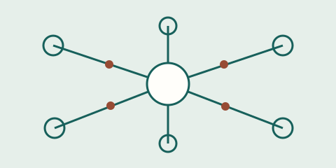
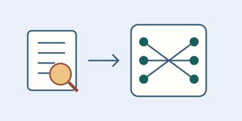

Swedish Research Council · 2026–2030
Memory Poisoning in LLM Agents
My role: Principal investigator (PI)
Foundations, attacks, and defenses.
Research direction ↗My goal is to gain fundamental insights into communication and learning systems, and to leverage these insights for practical design of these systems.
01 / Communication & distributed inference
I study how many devices can share information efficiently, even with limited coordination, energy, and knowledge of the wireless channel.
My work on unsourced multiple access considers communication from many intermittently active devices. Type-based approaches focus on the information reported collectively by those devices. I also study MIMO, noncoherent communication, and information freshness.
02 / Task-oriented sensing & transmission
I explore point-cloud transmission for remote registration: communicating with a downstream task in mind, rather than treating every bit as equally important.
The WASP-funded project Point-Cloud Transmission for Remote Registration connects communication design with 3D perception. Our work includes registration-error estimation and patch-based point cloud transmission with rate adaptation, bringing the communication budget and sensing data delivery into the same design problem.
03 / AI privacy & security
I investigate privacy risks in learning systems and the foundations of attacks and defenses, including membership inference and memory poisoning in AI agents.
Work on membership inference and federated learning examines the limits of privacy protection. A Swedish Research Council project, Memory Poisoning in LLM Agents: Foundations, Attacks, and Defenses, extends this research to the memories used by AI agents.
Swedish Research Council · 2026–2030
My role: Principal investigator (PI)
Foundations, attacks, and defenses.
Research direction ↗
WASP · 2025–2029
My role: Principal investigator (PI)
Communication designed around a downstream sensing task.
Research direction ↗
Marie Skłodowska-Curie Individual Fellowship · 2021–2023
My role: Marie Skłodowska-Curie Fellow
Low-latency and private edge computing in random-access networks.
Project website ↗My role: Co-principal investigator (co-PI)
My role: Co-principal investigator (co-PI)
My role: Co-principal investigator (co-PI)
My role: Principal investigator (PI)

IEEE SPAWC · 2024
A framework for recovering the collective information reported by many devices, including repeated reports.
IEEE ICASSP · 2026
Work on estimating registration error in point clouds, connecting learned representations with 3D perception.

NeurIPS · 2025
Investigating whether a data sample was part of a model’s training data through a Bayesian approach to membership inference.
IEEE Transactions on Wireless Communications · 2026
Phase calibration for distributed antenna systems integrated into the time-division duplex flow.
See the complete publication list for all papers, books, patents, posters, and reports.